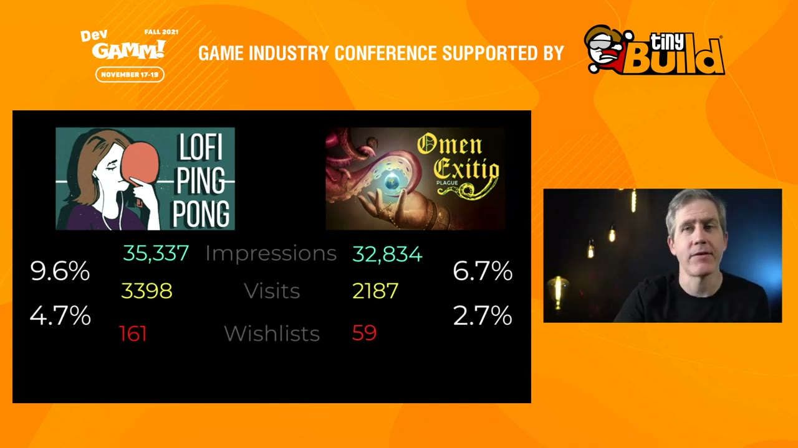
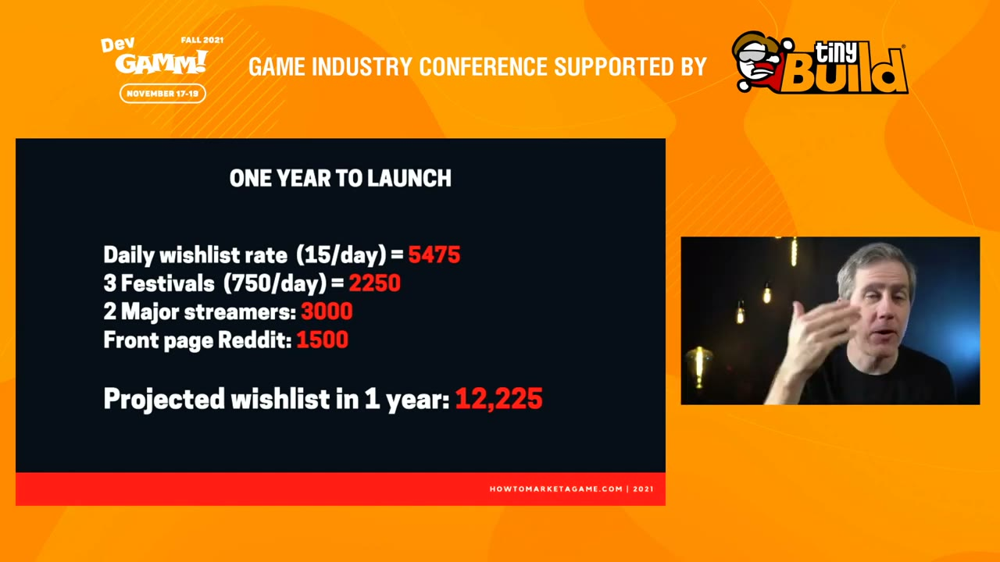
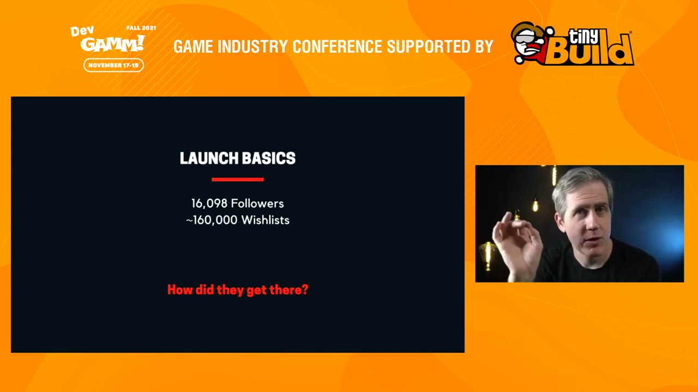

Start here
The overview
In this 2021 talk, Chris Zukowski treats Steam marketing as a long campaign rather than a single launch announcement. His argument starts with the game: genre and audience demand constrain what promotion can accomplish. A clear store page then converts everyday exposure, while festivals, playable builds, streamers, and other events provide additional bursts of interest. His Valheim case study shows how several channels can reinforce one another. The benchmarks belong to this recording and are planning examples, not present-day platform guarantees.
What the snapshots add
- Inspected slides clarify the conversion funnel, the annual wishlist arithmetic, and the distinction between Valheim followers and estimated wishlists.
- The genre and earnings charts are described with their original comparison scope rather than treated as proof of algorithmic causation.
What to take away
- Choose a market the game can serve
Zukowski argues that genre demand matters more than how hard a developer promotes a poorly matched product.
- Combine a baseline with promotional spikes
Capsule art and accurate tags help daily discovery; festivals and playable builds create larger opportunities over time.
- Use numbers to plan, not promise
Wishlist targets and channel estimates make a campaign concrete, but the talk does not establish fixed algorithm thresholds.
Steam replaced a visible gatekeeper with performance-sensitive discovery
Zukowski begins with Steam's transition from a small catalogue of Valve games to selected third-party releases, Greenlight voting, and finally the open submission system he describes as Steam Direct. Developers worried about the rapidly growing number of releases and asked for curation. His response is that curation did not simply disappear: some of it moved into recommendation systems and some into outside communities.
His central metaphor is an invisible bouncer. A developer may get a game into the store, but meaningful exposure still depends on evidence of demand. He recalls the “October event,” when developers noticed abrupt sales declines around recommendation changes. He interprets Valve's subsequent explanation about sales and wishlist popularity as evidence that the system retained a preference for games already demonstrating commercial interest. That interpretation guides the talk; it is not access to the algorithm's implementation.
The earnings chart he shows compares new releases in 2018 and 2019 by percentile. Lower percentiles fall below zero change, while much of the upper range is positive. He reads this as an environment in which stronger performers received more benefit and weak performers were squeezed. The chart is a comparison of earnings distributions across years, not a controlled experiment proving that an algorithm change alone caused the difference.
He brings the perspective of a consultant who has worked with developers and publishers, observed shoppers browsing Steam, and released a pixel platformer that did not sell well. The four areas he wants developers to work on are the game and its genre, wishlist accumulation, everyday store conversion, and larger promotional events. The objective is to build enough interest that Steam has reasons to show the game more widely.
Genre sets the odds before a campaign begins
A game can be polished, functional, and free of obvious bugs yet still sell poorly. Zukowski argues that developers often overlook genre demand when explaining this outcome. His tag analysis counted how many games carried particular Steam tags and compared that supply with review-based sales estimates. The displayed supply chart has especially tall Puzzle and Platformer bars. His point is that a category popular with creators need not be equally attractive to buyers.
He contrasts puzzle platformers with categories such as 4X strategy, city builders, role-playing games, and colony simulations. One inspected slide gives approximate median earnings of $44,000 for colony simulations and $1,200 for platformers. Those figures describe the data he used at the time, with all the limitations of tag classification and sales estimation. They are not a claim that a new colony simulation is guaranteed to earn that amount or that a platformer cannot break out.
His analogy is trying to sell snow skis in Tucson. A developer could produce excellent skis, publish clever posts, and hire ski influencers, but promotion cannot create the same local demand as a market where people actually ski. Likewise, tweeting harder may not overcome a weak fit between the product and the audience shopping on a particular store. Marketing begins with what is being made, rather than the amount of attention spent advertising it afterward.
The Steam preferences he describes include darker settings, substantial interacting systems, crafting, deck building, roguelikes, and replayable content. These let players experiment and return repeatedly. He is discussing commercial odds, not a prescription for every artist: he explicitly welcomes people making games for expression or love of design without a profit objective. Even commercially difficult genres can have exceptional successes; he cautions against using the exception as the expected outcome.
The lesson also is not to copy a high-earning tag onto a different game. Genre describes the experience buyers want. Picking a market means designing something its audience values, not presenting a platformer as a city builder and hoping that the label alone supplies demand.
Wishlists make launch interest cumulative
Choosing a promising genre does not remove the need for a campaign. Zukowski rejects the hope of simply releasing a game and going viral. A wishlist is useful because it keeps a prospective buyer connected to a later launch or sale; he describes Valve's notification email as an especially effective conversion mechanism. The campaign's job is to accumulate people who want that reminder.
He gives a rough wishlist-to-sales conversion range of 5–20% when the game and campaign meet the audience's expectations. He recommends aiming around 10,000 wishlists for a project intended to make meaningful commercial income, while acknowledging that a hobby project can have different goals. Although his slide uses minimum-style language, he explicitly says there is no magic test in which the algorithm changes behavior at exactly 10,000.
He associates that level of demand with a better chance of appearing in Popular Upcoming near release, and describes a large increase in wishlist collection when a game gets that visibility. The timing and volume he cites are historical observations. The general mechanism he wants developers to understand is reinforcement: interest collected before release can help unlock further discovery immediately before launch.
One influencer usually cannot supply the whole audience a project needs. His own examples vary between ordinary large results and exceptional ones, but the consistent message is that even major coverage is typically one contribution among many. Prelaunch is a marathon of festivals, outreach, testing, and repeated chances to learn. A good campaign chart looks like a staircase with ongoing growth and several jumps, rather than a flat line followed by one miraculous spike.
The everyday funnel: impressions, visits, and wishlists
Steam can expose a game every day even when the developer is not running an event. Zukowski separates two conversions: an impression of the capsule becomes a visit to the page, and a visit becomes a wishlist. Improving either step matters because the result repeats across many weeks. The page must tell shoppers that the game matches their tastes and looks worth investigating.
The complete comparison slide makes the denominators explicit. Lofi Ping Pong receives 35,337 impressions, 3,398 visits, and 161 wishlists over the period discussed: 9.6% of impressions become visits, and 4.7% of visits become wishlists. Omen Exitio receives 32,834 impressions, 2,187 visits, and 59 wishlists: 6.7% and 2.7% respectively. The wishlist percentages are not percentages of all impressions. Similar initial exposure can therefore produce quite different totals after both stages.
Repeated for a year, the stronger week's 161 wishlists would amount to roughly 8,000, while 59 per week would be roughly 3,000. This is an extrapolation that holds the observed week constant, not a forecast established by the two examples. It demonstrates why small-looking percentage differences can become consequential without any additional viral hit.
He recommends improving capsule art, citing Dwarven Valley's move from a screenshot-style image to a stronger illustration. The inspected slide places the old and new capsules over views and wishlists charts with a noticeable spike. He attributes an improvement to the new presentation; the still does not independently isolate its effect from every other possible change.
Recognizable genre cues help an interested shopper identify the game. A hammer in crafting-game art is his deliberately simple example. Accurate tags serve the same goal inside the store: they connect the game with people who want its real experience. Mislabeling a puzzle platformer as a city builder merely sends it to shoppers likely to reject it. Clear art and honest classification support each other.


The strongest promotional opportunities in his 2021 ranking
Zukowski ranks festivals first among the promotional channels he discusses. Online events remove travel, booth, staffing, and physical setup costs, and events featured by Steam put games in front of people already browsing a game store. He distinguishes Steam's own demo festival from region- or theme-specific events that may have additional eligibility or selection requirements. Applying widely means applying to events the game actually qualifies for.
His festival slide gives a median of about 750 wishlists; he also mentions stronger events producing 3,000–4,000 across a weekend. Developers can sometimes organize regional showcases and approach Steam about a shared promotional page, especially when the lineup contains games with an existing audience. His recommendation is to keep track of applications and deadlines so that suitable opportunities do not pass unnoticed.
Streamers are his next major channel. A playable demo gives a creator something concrete to cover. Rather than approach every large personality indiscriminately, find creators whose established tastes and audience overlap with the game. He cites around 1,500 wishlists as an example of strong coverage from a major creator, but does not present follower count as a dependable conversion formula.
He prefers organic coverage when the creator likes the game, while allowing paid coverage as another route. Repeated play can be especially useful: it suggests the game continues to interest both the streamer and their viewers. That sustained appeal depends partly on the design, which is one reason he values replayable systems and player-generated adventures.
A public beta provides another reason to talk about the game and an opportunity to invite interested players onto a mailing list or Discord. His model is a limited part of the game made available for a weekend or a week, with a clear invitation to wishlist. He gives roughly a thousand wishlists as an illustrative result. Although betas find bugs and generate feedback, he stresses their role as a marketing activity. Replayable games fit readily, but a carefully limited narrative sample can also work.
Reddit, press, and social media have different audiences and returns
Reddit can reach players, but success in a developer community does not necessarily translate into game buyers. Zukowski contrasts large gaming subreddits with smaller indie spaces and developer forums, where readers may be more interested in making games than buying one. Understanding a community's conventions is part of the work; he advises participating beyond self-promotion rather than arriving only to post links. His suggested ten-to-one mix of other participation to promotion is his rule of thumb in the talk, not a universal current rule for every subreddit.
He treats Imgur as a declining opportunity relative to its earlier potential, recalling roughly 400 wishlists for a strong front-page result. He similarly regards traditional press outreach as time-consuming for the direct wishlist returns he had observed, giving around 150 wishlists for an article at a major outlet. He would still take that interest, but encourages comparing the effort with festivals or playable coverage.
His most pointed distinction is between marketing and social media. Twitter attention, he argues, favors especially attractive graphics and cute animals with expressive eyes. A game without those qualities may receive little buyer conversion even if its developer works hard on posts. He still values Twitter for networking. His dismissive remarks about Facebook and Instagram reflect his experience and the period of this talk, rather than a timeless conclusion about all games and audiences.
He treats TikTok separately as an emerging opportunity, with strong posts bringing perhaps 200–1,500 wishlists in the range he cites. Even very large view counts may convert modestly: he mentions around a million views for roughly 2,000 wishlists. The analogy is processing a lot of rock for a little ore. A platform's ability to deliver attention and its ability to send interested Steam shoppers are different questions.
Across these channels, the useful unit for his campaign planning is the interested person who takes the next step. Views, likes, and developer praise can help, but they do not automatically add up to the same commercial audience as wishlists or people spending time with the game.
Build a campaign budget in wishlists, then look for many small gatekeepers
The annual planning slide combines a daily baseline and several discrete successes. Fifteen wishlists per day gives 5,475 in a year. Three festivals contribute 2,250 total, two major streamers contribute 3,000, and a front-page Reddit result adds 1,500. The displayed total is 12,225. These numbers clarify a passage where the automatic captions scramble several totals.
There is a small inconsistency even on the slide: the festival line is labeled 750/day, but its allocated 2,250 for three festivals uses 750 for each festival contribution. The reproducible example is the displayed allocation and sum, not a claim that every festival supplies 750 each day for its full duration. The exercise is to make assumptions visible and see whether the proposed activity could plausibly accumulate the target audience.
A team might replace those assumptions with its own baseline, realistic acceptance rate, genre, and production schedule. A visually exceptional project might qualify for more showcases; a larger business may need a much larger target. None of the example opportunities is guaranteed merely because it appears in a spreadsheet.
He closes the conceptual loop by saying curation has been scattered among festival selectors, streamers, and communities such as Reddit. Each has an audience and makes choices about what deserves attention. Marketing therefore means earning many separate opportunities for the right people to encounter the game. There is no single curator whose approval solves the whole campaign.


Valheim: a successful launch assembled from several reinforcing parts
Valheim is his case study against the impression that a major hit appeared from nowhere. He reconstructs a prelaunch campaign from public follower history, announcements, beta activity, and streaming charts. This is an outside analysis: he does not claim access to the developer's private wishlist totals or contracts.
The inspected launch slide shows 16,098 Steam followers and approximately 160,000 wishlists. He derives the latter using an approximate ten wishlists per follower. The distinction matters because the captions repeatedly drop digits and briefly reverse the ratio. The follower number is what the slide displays; the wishlist number remains his estimate, not a disclosed official count.
First, he sees an unusually good fit between product and market: a darker Viking setting, crafting and construction, exploration, deep systems, and long-lived player-generated adventures. Those qualities also give streamers repeatable material. A short narrative might be exhausted in one sitting; a group can keep returning to a systemic world and create more stories.
Second, social media size does not explain the result. He points to an early tweet with about fifteen likes and roughly 1,700 Twitter followers near launch. His argument is not that those figures measure every form of attention, but that a relatively small Twitter audience did not prevent a very large Steam success.
He associates one prelaunch bump with an E3/PC Gaming Show appearance, a new trailer, and the announcement of Coffee Stain as publisher, estimating around 1,500 wishlists for that event. He also estimates that daily wishlist growth rose from about 50 to 120 after the publisher connection. He suspects crossover from audiences for related Coffee Stain games such as Satisfactory. This is a plausible explanation offered by the speaker, not an experiment establishing the publisher as the sole cause.
Valheim also ran a long series of alpha and beta opportunities, including activity on itch.io. The inspected slide contains an alpha announcement, beta signup material, and a note about expanding testing. The early responses were modest, but repeated opportunities helped build an audience and improve the game over time.
Finally, he reads a rise in streaming just before release as evidence of coordinated early outreach. He speculates that some creators may have been paid and that enthusiasm kept them playing afterward; the public chart cannot verify the payment arrangements. His conclusion combines all the elements: good game, suitable genre, publisher audience, showcase placement, testing, and early streaming. Reducing that combination to a single viral moment loses the work that made the launch possible.


Q&A: mixed genres, announcement timing, and clear descriptions
For a mixed-genre game, Zukowski recommends testing the two audiences separately. Market toward one side for about a month, then the other, and see which group responds. A hybrid does not automatically inherit the full audience of both parents; it can disappoint both if the combination clashes with what either group wants. The response should determine where the campaign concentrates.
An unknown developer should get a Steam page up as soon as the art direction is settled enough to represent the game. The extra time is valuable for learning messaging and discovering what interests people. An established designer with a recognizable name can instead plan a stronger formal announcement, perhaps nine months to a year before launch, because that name gives press a reason to cover the reveal. His distinction is about the leverage a team already possesses.
Asked about festival lists, he points to the resources in his community, including a spreadsheet with deadlines and costs. Asked about the genre analysis, he explains that he counted tags in an aggregated game list and depended on their accuracy. That method describes how games are classified, not an authoritative taxonomy immune to mistagging.
He gives GOG and Epic much less emphasis than Steam, roughly comparing their potential sales with a tenth of Steam's in his experience. For Steam event broadcasting, he recommends streaming the game, including a prerecorded session where appropriate, but explicitly says he cannot supply a precise percentage improvement. These answers are historical judgments and recommendations rather than current store specifications.
His strongest page-design advice is to make the game's actual activity unmistakable. Screenshots and descriptions should explain whether the player crafts, fights, plans, rescues someone, or performs another concrete action. “Epic adventures” is too vague to tell a shopper what they will do. This returns to the central genre argument: communication works when it lets the right customer recognize an experience they want.
On reaching China, he openly says he lacks direct expertise. He has heard of developers using territory-specific publishing partnerships and suggests considering one when local interest is weak, while acknowledging that a game with substantial existing Chinese wishlist demand may have other options. The limitation is part of the answer: he is not offering a detailed market-entry method.
Source & limitations
This is an editorial synthesis of How to Market A PC Game / Chris Zukowski (How To Market A Game), published by DevGAMM. Timestamp links open YouTube at the corresponding section.
- Based on the complete English automatic captions and 11 inspected snapshots selected around the talk's substantive slides. These stills support the named examples; the intervening video, animations, and demonstrations were not exhaustively reviewed.
- Platform behavior, commercial figures, tool descriptions, and industry examples are presented as the speaker's claims at the time of the recording, not independently verified current guidance.
Inspected snapshots (11)
Selected stills, not continuous video review. Observations below describe the inspected frames.
4:05 ↗
- Chart compares changes in initial earnings of new releases from 2018 to 2019 by percentile; the lower percentiles are below zero and higher percentiles above it.
7:50 ↗
- Number-of-games bar chart has substantially taller Puzzle and Platformer bars than the other displayed tags.
11:10 ↗
- Slide labels the median colony simulation at approximately $44,000 and the median platformer at approximately $1,200.
14:45 ↗
- Slide presents approximately 10,000 wishlists as a minimum and says reaching it takes time.
17:25 ↗
- Lofi Ping Pong and Omen Exitio are compared with 35,337 and 32,834 impressions respectively; later funnel steps are not yet shown.
18:00 ↗
- Complete funnel: Lofi Ping Pong has 35,337 impressions, 3,398 visits (9.6%), and 161 wishlists (4.7% of visits); Omen Exitio has 32,834 impressions, 2,187 visits (6.7%), and 59 wishlists (2.7% of visits).
18:45 ↗
- Dwarven Valley old and new capsule images appear above separate views and wishlists charts with spikes; the image alone does not establish causation.
23:15 ↗
- Festival examples show Steam Game Festival and Games from Quebec, with a median wishlists label of 750.
30:35 ↗
- Annual example totals 12,225 wishlists: 5,475 from 15 per day, 2,250 from three festivals, 3,000 from two major streamers, and 1,500 from front-page Reddit. The festival line says 750/day but the total allocates 750 per festival.
34:20 ↗
- Valheim launch basics slide explicitly shows 16,098 followers and approximately 160,000 wishlists.
38:50 ↗
- Valheim slide combines an itch.io alpha announcement, a beta signup page, and a development note about expanding the beta.
Read the timestamped source captions
en-orig · automatic captions. Caption errors and non-speech labels are retained in this source view.
0:00 ↗ hi
0:01 ↗ hey folks this is chris sukowski thank
0:03 ↗ you so much for having me on devgamm i'm
0:06 ↗ ready to give you a talk about how to
0:07 ↗ market a game in 2021 it's almost over
0:09 ↗ though so uh let's get started uh you
0:12 ↗ know so i'm gonna have to update this
0:14 ↗ presentation uh 2022 but we're still in
0:16 ↗ 21 so let's get
0:20 ↗ [Music]
0:28 ↗ started if you're new to steam and
0:31 ↗ selling a game this is what steam
0:33 ↗ originally looked like look at that list
0:35 ↗ of games in the bottom corner here you
0:38 ↗ didn't even need a scroll bar to show
0:40 ↗ all the games there were that few it was
0:41 ↗ just the games that valve made um and
0:44 ↗ this is what steam looked like very
0:46 ↗ simple but
0:47 ↗ in 2005
0:49 ↗ valve allowed the first non-valve game
0:52 ↗ on steam it's called ragdoll kung fu you
0:54 ↗ can still buy it it's only a dollar you
0:56 ↗ should probably buy just to like support
0:58 ↗ the first game ever made on steam
1:00 ↗ but that was just the start
1:03 ↗ from 2005 to 2012
1:06 ↗ valve actually let more and more games
1:08 ↗ on but valve had to approve you would
1:11 ↗ apply you'd show your game to them and
1:13 ↗ valve would say
1:15 ↗ in or out they were like the bouncer of
1:17 ↗ a club they were like very strict
1:20 ↗ keeping people out
1:21 ↗ it's what we call gatekeeping okay so
1:24 ↗ what happened at 2012 to 2017 valve
1:26 ↗ transition then went to green light the
1:28 ↗ green light system was basically upvotes
1:30 ↗ it was kind of like um almost like i
1:32 ↗ don't know i would say it's kind of like
1:33 ↗ a kickstarter model where you had to get
1:35 ↗ people upvoted if you got enough up
1:36 ↗ votes your game was on steam
1:38 ↗ so but gabe uh founder of valve and a
1:42 ↗ ceo he said we're gonna get rid of uh
1:45 ↗ green lights it's not doing its purpose
1:47 ↗ i don't know why they didn't it's
1:48 ↗ corporate thing um and then we went into
1:52 ↗ steam direct where anybody with a
1:54 ↗ hundred dollars
1:56 ↗ could just contribute and all of a
1:58 ↗ sudden their game is on steam that's
1:59 ↗ kind of where we are now and this is
2:01 ↗ kind of where people started saying oh
2:03 ↗ this is the indie apocalypse you can see
2:04 ↗ the number of games skyrocketing up
2:06 ↗ um and weird stuff was happening there
2:09 ↗ were games for like 200 and 129 that
2:11 ↗ looked like this people thought it was
2:13 ↗ some illegal activities were happening
2:15 ↗ who knows it was the wild wild west of
2:17 ↗ games on steam now this is when the
2:19 ↗ indies really started saying this is the
2:22 ↗ apocalypse way too many key
2:24 ↗ too many games uh we want curation
2:27 ↗ and you know what curation is
2:29 ↗ it's actually just the gatekeeper to
2:30 ↗ bring back the gatekeeper but that's not
2:32 ↗ a happening gate steam already said
2:34 ↗ we're done with curation so we don't
2:36 ↗ have curation and we're not going to get
2:38 ↗ it
2:39 ↗ but then kind of after these complaints
2:41 ↗ and all these weird games started
2:42 ↗ showing up weird stuff happened on steam
2:45 ↗ we could tell valve was kind of poking
2:47 ↗ around that stuff there was something
2:48 ↗ called the october event and this is uh
2:51 ↗ an indie named jake burkett kind of
2:52 ↗ noticed his sales took this real quick
2:54 ↗ dive you see how they just that blue bar
2:56 ↗ just chopped off right there in october
2:59 ↗ this is what we call the october event
3:00 ↗ that was this disturbance
3:03 ↗ and valve noticed it and they heard us
3:05 ↗ complaining of indeed saying wait what
3:07 ↗ will our numbers go down in october and
3:08 ↗ they said don't worry don't worry we
3:10 ↗ fixed it it was just a slight bip we
3:12 ↗ were trying some algorithm changes don't
3:15 ↗ worry don't worry but then if you got
3:17 ↗ deep down you can see this is the blog
3:18 ↗ post the url is at the bottom just go
3:20 ↗ all the way down
3:21 ↗ hidden there's one line in the middle of
3:23 ↗ the paragraph nobody read it except for
3:25 ↗ me i always read these things said
3:28 ↗ however we still kept a part of the
3:30 ↗ changes that factored in sales and
3:31 ↗ wishlist popularity into our
3:33 ↗ into our algorithm change
3:35 ↗ that right there says everything
3:38 ↗ so
3:39 ↗ what that means is that they change the
3:42 ↗ algorithm to kind of
3:43 ↗ kind of boost people who
3:45 ↗ are you know making a lot of money um
3:48 ↗ and so here
3:49 ↗ about a year after that
3:51 ↗ this is 2019 the end of 2019 valve
3:53 ↗ released this blog post and the url is
3:55 ↗ at the bottom there and in this blog
3:57 ↗ post they said we analyzed the data of
4:01 ↗ all games released in 2019 and all the
4:03 ↗ games released in 2018 and we compared
4:05 ↗ the difference between them what you're
4:07 ↗ looking at is this difference chart and
4:09 ↗ so
4:10 ↗ if you released a game in 2019 you
4:13 ↗ if you made like in the top
4:15 ↗ third you made so much more more money
4:17 ↗ than the games released in 2018 that's
4:19 ↗ what that big green section is it's
4:20 ↗ saying look at all this extra
4:23 ↗ money you would earn because of our new
4:25 ↗ algorithm changes
4:26 ↗ now that's great valve is like doo doo
4:29 ↗ the green section we love the green
4:30 ↗ section but me being mr curious here
4:33 ↗ said well what about this orange section
4:35 ↗ you are saying here valve
4:37 ↗ that in 2019
4:40 ↗ games that kind of earned on the lower
4:42 ↗ end of the scale you know this is the
4:44 ↗ zero to 30th percentile of games that
4:46 ↗ don't earn a lot of money actually made
4:48 ↗ less money
4:50 ↗ in 2019 than they did 2018. and
4:52 ↗ essentially what this algorithm change
4:54 ↗ did was it kind of boosted games it made
4:57 ↗ a lot and kind of pushed down the games
5:00 ↗ that didn't make much money
5:02 ↗ and what i consider this is an
5:04 ↗ algorithmic change to hide a bouncer
5:06 ↗ right in there that little inflection
5:08 ↗ point is where kind of the gatekeeping
5:10 ↗ happens now and it's the algorithm doing
5:13 ↗ it so if you don't earn enough valve is
5:16 ↗ going to push you down and once you earn
5:18 ↗ a lot valve is going to start pushing
5:20 ↗ you up and i'm going to show you how to
5:21 ↗ get on the right side of that bouncer
5:24 ↗ all right so that that's me big picture
5:26 ↗ of me standing up i'm sitting down but
5:28 ↗ that's stan and chris
5:29 ↗ right there the i work with a lot of uh
5:32 ↗ publishers and indies i help them get
5:34 ↗ their games so that they work with the
5:36 ↗ algorithm
5:37 ↗ look for marketing
5:38 ↗ opportunities kind of strategize with
5:40 ↗ them trying to figure out how to get
5:41 ↗ their game seen the most on steam so
5:44 ↗ those are some of the games that i've
5:45 ↗ worked on
5:46 ↗ i also created a free
5:50 ↗ steam course uh i teach you how to make
5:52 ↗ a steam page it's very important to make
5:54 ↗ a good steam page i think everybody
5:56 ↗ deserves a good steam page so i made
5:58 ↗ this class just google how to make a
6:00 ↗ steam page
6:01 ↗ or go to how to make a steampage.com
6:03 ↗ it's a free class you can just take it
6:05 ↗ um i i recommend it because i made it
6:07 ↗ but um if you've got a steam page even
6:09 ↗ if you've released a game like a year or
6:11 ↗ two years or three years ago take this
6:13 ↗ class it tells you all the little tricks
6:14 ↗ and stuff so um much more than i can go
6:16 ↗ into depth in my one hour here
6:19 ↗ so i also uh based all that research
6:21 ↗ because i did this study where i've
6:22 ↗ studied people browsing on steam how
6:24 ↗ they shopped i just observed regular
6:26 ↗ customers do their daily steam shopping
6:29 ↗ and i learned a lot of stuff by doing
6:30 ↗ that you can look at my gdc talk there
6:33 ↗ okay i also make games that's how i kind
6:35 ↗ of know you know what it feels like to
6:37 ↗ be a developer and now have your game
6:38 ↗ sell i made a game that didn't sell very
6:39 ↗ well one screen platformer it's a pixel
6:42 ↗ platformer we'll talk about that what
6:43 ↗ happens with pixel platformers
6:45 ↗ but
6:46 ↗ what i'm going to talk to you about
6:47 ↗ today is how to optimize your game so
6:49 ↗ you get past this invisible
6:51 ↗ bouncer that's kind of in the algorithm
6:53 ↗ so we're going to talk about four big
6:55 ↗ things that will help you get past this
6:57 ↗ big guy here um the game and the genre
7:00 ↗ the game that you're making how to get
7:01 ↗ those wish lists with and the importance
7:04 ↗ of them and then finally how to get
7:06 ↗ boring daily growth and then how to do
7:08 ↗ these exciting promotions that bring in
7:09 ↗ all these wish lists and get you really
7:11 ↗ uh up there so let's talk about it let's
7:14 ↗ get started we're to be talking games
7:16 ↗ and genre here
7:17 ↗ so
7:18 ↗ this is frustrating to a lot of
7:20 ↗ developers they think i made a good game
7:23 ↗ and it didn't sell there's no bugs i
7:25 ↗ have zero bugs what's the deal why isn't
7:27 ↗ my game not selling um it is genre genre
7:30 ↗ genre genre genre genre that matters so
7:34 ↗ much for steam not until i've made my
7:35 ↗ game and i've actually marked a bunch do
7:37 ↗ i realize how important genre is let me
7:39 ↗ explain what i mean this right here is
7:41 ↗ every game on steam i i just went i
7:44 ↗ downloaded a list of every game on steam
7:46 ↗ and the tags they have and then i
7:48 ↗ counted up how many tags i didn't i used
7:49 ↗ an excel function to count up how many
7:51 ↗ games have each type of tag guess what
7:54 ↗ top two tags puzzle and platformer more
7:57 ↗ games have puzzle and platformer tags in
7:58 ↗ them than any other genre
8:00 ↗ then i graphed how many reviews they got
8:02 ↗ in estimated sales you can do this
8:04 ↗ calculation
8:05 ↗ and i graph the number of sales that
8:07 ↗ games have against the same graph look
8:10 ↗ at this although puzzle platformers are
8:13 ↗ very very popular with indies
8:15 ↗ nobody buys them
8:16 ↗ and other genres like forex buildings
8:20 ↗ city builders rpgs they don't have many
8:24 ↗ games on steam but a lot of people buy
8:26 ↗ them so there's kind of this influx
8:29 ↗ inflection i don't know i just made up a
8:31 ↗ word but anyway
8:33 ↗ sorry translator
8:34 ↗ don't even translate that word um what
8:37 ↗ we've got to do is figure out what
8:39 ↗ genres people like and what people's
8:41 ↗ genres don't like um and so here's kind
8:44 ↗ of all their data points like uh if you
8:46 ↗ have a steam festival how many people
8:48 ↗ watch these streams not a lot of people
8:49 ↗ watch the pixel art streams uh the
8:52 ↗ puzzle platformer streams on steam okay
8:55 ↗ well you might say i'm still going to
8:57 ↗ make my puzzle platformer i'm just going
8:58 ↗ to tweet so much harder i'm going to
9:00 ↗ tweet as much as i can about my game i'm
9:02 ↗ going to tweet so much harder than those
9:03 ↗ people making those city builders all
9:05 ↗ right that makes sense that makes sense
9:06 ↗ but let me show you this let me give you
9:08 ↗ an explanation before you start tweeting
9:09 ↗ all that stuff okay here's where i live
9:11 ↗ i live in the united states down at the
9:12 ↗ bottom this is the deserts we're right
9:14 ↗ above mexico here this is the deserts of
9:17 ↗ america
9:18 ↗ this is my childhood home this is where
9:20 ↗ i grew up look at right there cactuses i
9:23 ↗ literally had cactuses in my front yard
9:25 ↗ um and whenever bugs bunny wanted to
9:28 ↗ show that they were in the desert they
9:30 ↗ showed saguaro cactuses i literally had
9:33 ↗ the sorrow cactus in my front yard
9:35 ↗ that's where i lived i grew up in the
9:36 ↗ desert um now you might say chris i
9:40 ↗ noticed there's no ski shots in tucson
9:42 ↗ i'm going to be an indie ski shop seller
9:44 ↗ in tucson
9:46 ↗ and i actually googled in tucson and i
9:48 ↗ looked how many ski shops there are i
9:50 ↗ found one that's called skis and atvs
9:52 ↗ and i called them up i literally called
9:54 ↗ them up and i said how's the skis and
9:55 ↗ they said we don't sell skis we sell jet
9:57 ↗ skis you know on the water not snow skis
10:00 ↗ why would we sell snow skis
10:02 ↗ and but you're like no i'm still going
10:04 ↗ to release it we're going to tweet
10:06 ↗ pool ski memes we're going to get this
10:08 ↗ artisanal craftsman who can make the
10:10 ↗ best skis and we're going to hire ski
10:12 ↗ influencers and they're going to promote
10:14 ↗ skis in tucson and it but to that i say
10:18 ↗ it doesn't matter what you do it doesn't
10:20 ↗ matter what type of tweets you do what
10:22 ↗ type of promotions
10:23 ↗ nobody buys skis in tucson's we're a
10:25 ↗ desert people we love the desert we
10:26 ↗ don't love snow so it doesn't matter on
10:30 ↗ steam it's like trying to sell skis in
10:32 ↗ tucson in a desert
10:34 ↗ whatever the genre is matters more than
10:36 ↗ the promotion you do you have to pick
10:38 ↗ the right genre on steam i cannot
10:40 ↗ emphasize this enough all the marketing
10:42 ↗ advice i give anything else stops at
10:45 ↗ genre you got to pick the right type of
10:46 ↗ game for steam okay
10:48 ↗ this
10:49 ↗ depends
10:50 ↗ more on your success
10:52 ↗ than anything else is genre and the type
10:54 ↗ of game that you make
10:56 ↗ okay if we go to this website uh i love
10:58 ↗ this site game stats stat steam tags you
11:01 ↗ can look the the estimated earnings for
11:03 ↗ every single tag on steam if you go down
11:06 ↗ and you look at something like median uh
11:08 ↗ number of sales uh for a median call for
11:11 ↗ a a colony sim versus a platformer like
11:14 ↗ my game you can see the difference
11:16 ↗ colony sims earn like forty four
11:17 ↗ thousand dollars on median uh and uh
11:20 ↗ platformers earn about twelve hundred
11:23 ↗ big difference between just based on the
11:25 ↗ genre
11:26 ↗ so what kind of games does seem like
11:28 ↗ what are the genres they like dark
11:30 ↗ settings kind of like grimdark you know
11:31 ↗ medieval
11:33 ↗ deep gameplay they like to have a lot of
11:35 ↗ systems that they can tweak and play
11:37 ↗ that and have endless thing like
11:38 ↗ crafting games card builders and they
11:40 ↗ like endless content they don't really
11:42 ↗ like a narrative game as much but they
11:45 ↗ really like
11:47 ↗ roguelikes and colony scenes where they
11:48 ↗ can keep replaying and replaying it's
11:50 ↗ almost got endless content those kind of
11:52 ↗ things do very well on steam now i'm
11:54 ↗ just telling you this so that you
11:55 ↗ understand the odds there are games that
11:57 ↗ break through and you might say well i
11:59 ↗ know this one game it was a pixel art
12:00 ↗ platformer that sold very well yes it
12:02 ↗ happens it does happen sometimes but
12:04 ↗ we're talking odds on average you're
12:06 ↗ going to earn a lot more with if you
12:09 ↗ target the genres that steam like it's a
12:11 ↗ very risky thing like a lottery ticket
12:14 ↗ to uh to do a puzzle platformer and try
12:16 ↗ and and beat the algorithm it's just so
12:18 ↗ hard to get past that
12:21 ↗ now if you're making an art game or a
12:23 ↗ game for the love of game design or
12:25 ↗ something you don't care about profits
12:26 ↗ don't listen to me but do your own
12:28 ↗ course i i love you you are what's
12:31 ↗ pushing the industry forward um but for
12:33 ↗ everybody else who's you know trying to
12:34 ↗ make a little bit of the money um it's
12:36 ↗ actually pretty good you do you should
12:39 ↗ very much care about what type of games
12:41 ↗ you're selling on steam okay so let's
12:44 ↗ say you heard my voice you said advice
12:46 ↗ you said you know what the number one
12:47 ↗ genre is it's call an extent we can make
12:49 ↗ that and then i'm just gonna drop it
12:50 ↗ with no marketing like beyonce drops her
12:52 ↗ albums uh and just out of the blue drop
12:54 ↗ my album without any marketing
12:57 ↗ you can't do that because of this guy
12:59 ↗ the bouncer who prevents these games
13:02 ↗ from getting too big on steam without
13:04 ↗ going to proper channels and the thing
13:06 ↗ that kind of keys it up are wish lists
13:09 ↗ so i'm going to talk about wishlist
13:10 ↗ wishlist wishlist
13:12 ↗ and this is what we're going to have to
13:14 ↗ come up against which is people that say
13:17 ↗ i'm just going to go viral i'm going to
13:18 ↗ release my game and i hope to go viral i
13:20 ↗ don't need to do like a bunch of
13:21 ↗ marketing
13:22 ↗ but this guy is what prevents that from
13:24 ↗ happening this guy keeps things from
13:25 ↗ like just going viral okay
13:28 ↗ so in steam let me give a little
13:30 ↗ background here in steam there's this
13:31 ↗ button called add to wishlist okay if
13:34 ↗ somebody likes a game they usually hit
13:35 ↗ add to wishlist if they're interested in
13:37 ↗ it because they want to hear about it
13:38 ↗ now when they hit add to wishlist
13:41 ↗ a few when the game launches or goes on
13:43 ↗ sale they will get an email from valve
13:45 ↗ that says hey this game that you wish
13:47 ↗ listed is on sale now
13:50 ↗ this email converts better than anything
13:52 ↗ else on steam better than uh streamers
13:54 ↗ better than twitter tick tock anything
13:57 ↗ this email from valve is the best so
13:59 ↗ what we're trying to do is get as many
14:01 ↗ people to sign up so that they get this
14:02 ↗ email than anything else that's the name
14:04 ↗ of the game
14:05 ↗ so when your game launches if you've
14:07 ↗ done the right marketing and your game
14:09 ↗ is not like buggy or actually hits the
14:10 ↗ market what they want you can expect
14:13 ↗ about five to twenty percent of people
14:14 ↗ of these wish lists that you gather from
14:16 ↗ steam to convert to sales it's kind of
14:19 ↗ rough
14:20 ↗ estimate depends on what kind of
14:21 ↗ marketing you do but about five to
14:23 ↗ twenty percent so
14:25 ↗ there's this sort of thing it's and i'll
14:27 ↗ tell you tell you what but
14:29 ↗ it's about ten thousand wishlists i
14:31 ↗ would recommend for a game that's really
14:33 ↗ trying to sell itself you know you can
14:34 ↗ do less but if you're just a small
14:35 ↗ hobbyist you don't need to get all those
14:37 ↗ businesses but if you're really trying
14:38 ↗ to make money at this i'd advise at
14:40 ↗ least ten thousand there's no magic
14:42 ↗ number like steam looks at the algorithm
14:44 ↗ that says if less than 10 000 do this if
14:46 ↗ not do this but let me show you it's
14:48 ↗ just kind of being safe um
14:50 ↗ there's this chart here where it ranks
14:53 ↗ all the games it's called popular
14:54 ↗ upcoming and before a game releases like
14:56 ↗ a week to a week and a half before a
14:58 ↗ game launches you end up on this chart
15:00 ↗ if you get about 10 000 wishlists you're
15:02 ↗ pretty much guaranteed to be on this
15:04 ↗ list
15:04 ↗ this list is the first kind of
15:07 ↗ support that valve does for you they
15:10 ↗ will kind of boost your game and when
15:11 ↗ you're on this list you get about a
15:12 ↗ thousand wishlists a day it's very
15:14 ↗ helpful just before your game launches
15:16 ↗ and a lot of steam shoppers look at this
15:18 ↗ thing so i consider it the first sign
15:21 ↗ when you get about ten thousand wish
15:22 ↗ lists that the um
15:24 ↗ uh guy is going to lower the rope just a
15:26 ↗ little bit the balance is going to kind
15:28 ↗ of let you into the club just a little
15:29 ↗ bit not a lot he's just testing out he's
15:32 ↗ he's kind of interested in you okay
15:34 ↗ so here's the reason okay assuming 10
15:36 ↗ 000 is the number
15:38 ↗ a big influencer covering your game
15:40 ↗ cannot get you more than a thousand
15:42 ↗ wishlists they just don't i've seen some
15:44 ↗ really popular uh streamers play
15:47 ↗ at most you get maybe two to four
15:48 ↗ thousand most but even a top tier
15:51 ↗ influencer can't get you ten thousand
15:52 ↗ wishlists in one shot it just doesn't
15:54 ↗ happen that way so if let's say here
15:58 ↗ um you try and get that influencer it's
16:00 ↗ not gonna work so the pre-launch is
16:02 ↗ actually a marathon you're building up
16:04 ↗ over several things it's not just one
16:06 ↗ crazy influencer that'll do it for you
16:07 ↗ you have to build these up over time and
16:09 ↗ collect these wish loss over a long
16:11 ↗ period of time constantly marketing
16:13 ↗ i actually like this system because it
16:15 ↗ gives you a lot of shots on goal it
16:17 ↗ gives you a lot of time to kind of test
16:18 ↗ out your marketing figure out what works
16:20 ↗ what doesn't you really get to
16:22 ↗ experiment okay
16:24 ↗ so
16:25 ↗ this is what a really good
16:27 ↗ campaign looks like this is called the
16:28 ↗ follower chart this is just for some
16:30 ↗ random game that i thought looked good
16:31 ↗ but as you can see they have these kind
16:32 ↗ of like steady up steps this is
16:35 ↗ basically their number of wish lists as
16:36 ↗ you can see it's a good steady increase
16:38 ↗ throughout time this is what a good
16:41 ↗ marketing campaign looks like your
16:42 ↗ wishlist account will slowly go up it's
16:44 ↗ not just a huge spike and that's it it's
16:46 ↗ it's several little stair steps okay
16:49 ↗ so we're going to talk about this
16:50 ↗ there's two parts to any campaign
16:52 ↗ there's the slow steady growth and
16:54 ↗ there's the sharp spikes i kind of
16:55 ↗ underlined them there for you okay and
16:57 ↗ we're going to talk about this there's
16:58 ↗ two types boring daily growth and
17:00 ↗ exciting promotions so let's talk about
17:02 ↗ boring stuff because i like boring stuff
17:03 ↗ okay so every day steam actually gives
17:06 ↗ you quite a bit of visibility they
17:08 ↗ expose your game and people decide by
17:10 ↗ looking at it you know steam will show
17:12 ↗ you what's called your capsule which is
17:13 ↗ your image they'll decide i like that
17:14 ↗ game already i don't i'm going to show
17:16 ↗ you an example of this so here's a
17:18 ↗ capsule on the left for a game called
17:19 ↗ low five ping pong on the right is omen
17:21 ↗ exoto now
17:22 ↗ both of these games get about the same
17:24 ↗ exposure from steam right around 35 000
17:27 ↗ exposures per week this is over a seven
17:29 ↗ day period okay this is real data from
17:31 ↗ two real games that they shared with me
17:32 ↗ okay
17:33 ↗ now the number of people who see that
17:35 ↗ and then click on it is called a
17:37 ↗ conversion and they go to visit so when
17:39 ↗ they visit your same page it's called a
17:41 ↗ visit as you can see lo-fi ping-pong
17:42 ↗ converted nine percent of the views or
17:45 ↗ the impressions to a view oman exoto
17:47 ↗ converted 6.7 and then it goes down from
17:50 ↗ there if they view the steam page they
17:52 ↗ wish listed if they like it or they
17:53 ↗ don't over a seven day period lo-fi
17:55 ↗ ping-pong got 4.7
17:57 ↗ wish listed it 2.7 seven of moments to
18:00 ↗ uh converted to wishlist now you might
18:02 ↗ say oh that's pretty similar 9.6 6.7 4.7
18:06 ↗ to 2.7 that's not a lot of difference
18:09 ↗ but this is just over a seven day period
18:10 ↗ if you just continue they didn't do any
18:12 ↗ extra promotion you just did this week
18:14 ↗ after week every seven day at the end of
18:16 ↗ the year oman exoto will get eight
18:18 ↗ thousand wish lists omen exito we'll get
18:20 ↗ 3 000 wishes as you can see that stuff
18:22 ↗ compounds like interest and it just
18:25 ↗ grows and grows and grows so it's very
18:26 ↗ important that you kind of optimize your
18:28 ↗ steam page get it ready for the slow
18:30 ↗ boring growth
18:32 ↗ and one of the best things you can do is
18:33 ↗ improve your capsule this is an example
18:36 ↗ of a game that um i saw they shared
18:38 ↗ their data with me uh it's called
18:39 ↗ dwarven valley they had a capsule that
18:41 ↗ was just a screenshot of the game they
18:43 ↗ went and changed upgraded the capsule to
18:45 ↗ a fine illustration really good looking
18:46 ↗ really good text that says dwarven
18:48 ↗ valley
18:49 ↗ and you can see the graph pop up right
18:52 ↗ when they change that capsule good
18:54 ↗ capsule art makes people think this is a
18:56 ↗ quality game it's interesting it matches
18:58 ↗ my taste you've got to get a good
19:00 ↗ capsule it is very important one of the
19:03 ↗ things is like people who like crafting
19:04 ↗ games want to see that it's a crafting
19:05 ↗ game you'll notice that crafting games
19:08 ↗ typically put a hammer this game uh
19:10 ↗ crafting idle clicker put two hammers
19:12 ↗ they're double the crafting of everybody
19:13 ↗ else so if you're making a crafting game
19:15 ↗ put a hammer in your capsule it tells
19:17 ↗ shoppers who like uh crafting games that
19:19 ↗ yours is a crafting game and they're
19:20 ↗ more likely to click it it's little
19:22 ↗ things like this that just help the
19:23 ↗ algorithm
19:24 ↗ support your game
19:26 ↗ okay so you want to get your um you you
19:29 ↗ want to tag correctly because tags show
19:31 ↗ your game to the right people like i
19:32 ↗ said people who like crafting games are
19:34 ↗ going to get supported valve is all
19:36 ↗ about the type of game so if you tag
19:38 ↗ your game correctly the right audience
19:40 ↗ is going to see it
19:41 ↗ so different genres do better on steam i
19:44 ↗ told you about this here are some
19:45 ↗ examples you know like city builders
19:47 ↗ they get about 50 wishlists per day and
19:50 ↗ fbs 30 a day puzzle platformers about
19:52 ↗ two a day
19:54 ↗ that's just the way the genres work okay
19:56 ↗ um now you might say you're making a
19:58 ↗ puzzle platformer why don't i just tag
20:00 ↗ it as a city builder and then i'll get
20:02 ↗ all these wishlists doesn't work that
20:04 ↗ way because if they if you tag your
20:05 ↗ gaming correctly all these people who
20:07 ↗ really like city builders are like
20:08 ↗ what's this puzzle platformer doing in
20:10 ↗ here get out of here um you can't fool
20:12 ↗ this steam algorithm with your genre it
20:14 ↗ optimizes even though some are more
20:15 ↗ popular they really want you to tag it
20:18 ↗ correctly because then you'll be shown
20:20 ↗ to the few people on steam who actually
20:21 ↗ like puzzle platformers that's the name
20:23 ↗ of the game okay
20:25 ↗ so
20:26 ↗ that is how you get that good slow
20:27 ↗ boring growth because day after day it
20:29 ↗ shows your game to the right people and
20:31 ↗ then they wish list it if you've really
20:33 ↗ emphasized your genre and added the
20:35 ↗ right tags i show you how to do all of
20:37 ↗ this slow boring stuff on my thing how
20:40 ↗ to make my class my free class how to
20:42 ↗ make a steampage.com i recommend you
20:44 ↗ sign up it goes into great detail okay
20:46 ↗ let's talk about the last part which is
20:47 ↗ exciting promotions okay
20:50 ↗ this is what a lot of people call going
20:52 ↗ viral um it's like how to really boost
20:55 ↗ up your numbers really expose your game
20:57 ↗ and if you look at this my example game
20:59 ↗ with lots of good promotion events
21:01 ↗ you'll notice all these little spikes
21:03 ↗ all throughout the line um just straight
21:06 ↗ shoots up this means they were in some
21:08 ↗ sort of big promotion event um i
21:11 ↗ underlined them here i'm going to tell
21:12 ↗ you how to get these okay
21:14 ↗ now i'm going to talk about them in
21:16 ↗ order of how they appear uh like what's
21:18 ↗ the most popular what's the best way to
21:20 ↗ get your game seen and then um all the
21:22 ↗ way down to the least likely okay
21:25 ↗ the number one is festivals right now
21:28 ↗ because of the times we're in a lot of
21:30 ↗ vessels have gone virtual this has
21:32 ↗ actually been very good for marketing
21:34 ↗ because before you had to go to a
21:35 ↗ festival you had to get in an airplane
21:37 ↗ go to some convention center set up a
21:39 ↗ booth with physical media get your team
21:41 ↗ to come with you had to put on special
21:43 ↗ shirts you know they always had the same
21:44 ↗ shirt with your logo and stuff you don't
21:46 ↗ even have to put on shirts anymore you
21:47 ↗ can be in your pajamas because these
21:50 ↗ festivals are all online and the best
21:52 ↗ ones are the ones where you are um
21:56 ↗ just like on the front page of steam
21:58 ↗ so steam has been featuring these
22:00 ↗ festivals and
22:02 ↗ thousands and thousands of people come
22:03 ↗ to see these okay
22:05 ↗ uh they they are on steam so we know
22:08 ↗ they're steam shoppers we know they like
22:10 ↗ games
22:11 ↗ and so they go to these um online
22:14 ↗ takeovers we call them steam takeovers
22:16 ↗ where the front page of steam says like
22:18 ↗ games from quebec and you can go and you
22:20 ↗ can see all these games from quebec now
22:22 ↗ steam also runs a festival of their own
22:24 ↗ they run it about three times a year
22:26 ↗ and these festivals um are called the
22:29 ↗ steam next fest
22:31 ↗ and um you should opt into them
22:33 ↗ everybody can get into them
22:35 ↗ ones for like games from quebec you have
22:37 ↗ to live in quebec so unless you're ready
22:39 ↗ to move um you have to be right there
22:41 ↗ but you know that you can um organize
22:44 ↗ these events you know uh for your own
22:46 ↗ regions and then have them uh talk to
22:49 ↗ steam say hey can you feature us we've
22:51 ↗ got a lot of games from our region we'd
22:53 ↗ like to have a special sales page
22:56 ↗ featuring all our games and if steam
22:58 ↗ sees that you have some games that are
22:59 ↗ really good i mean like million dollar
23:01 ↗ sellers in your lot that you're going
23:03 ↗ for uh you know saying we're promoting
23:04 ↗ with this this this game they'll opt you
23:07 ↗ in um but
23:09 ↗ so
23:10 ↗ festivals are the best way right now to
23:12 ↗ get wishlists we're talking thousands of
23:14 ↗ wishlists on these median is about 750
23:17 ↗ but some of these festivals can bring in
23:18 ↗ 3 000 4 000 wishlists
23:22 ↗ over like a weekend so very powerful um
23:25 ↗ on my discord server which if you go to
23:27 ↗ howtomakethegame.com there's a discord
23:29 ↗ server i have a special widget in there
23:31 ↗ where i list all the different festivals
23:33 ↗ you should apply to there's a new one
23:34 ↗ every week kind of ramping down for the
23:36 ↗ winter but they'll be back in january
23:38 ↗ and just apply for every single one you
23:40 ↗ can get your game into and if you get
23:41 ↗ accepted get ready for wishlist town
23:43 ↗ because the train's coming okay
23:46 ↗ next one down the next best way to get
23:48 ↗ wishlist and get your game seen are
23:49 ↗ streamers
23:51 ↗ a a good streamer uh top tier we're
23:54 ↗ talking like a million followers on
23:56 ↗ twitch or youtube um can get you about
23:59 ↗ 1500 wishlists if they cover your game
24:02 ↗ so it's very good to get covered by some
24:04 ↗ of these streamers and the way you do it
24:05 ↗ is you have a demo gotta have your demo
24:07 ↗ ready and you just start reaching out to
24:09 ↗ them um you find ones that like your
24:11 ↗ type of game that have your genre your
24:14 ↗ tastes and you just start communicating
24:16 ↗ with them reach out you can pay some but
24:18 ↗ i find that the organic ones where they
24:20 ↗ just like your game work better than the
24:22 ↗ paid ones but if you can't get anybody
24:24 ↗ like your game you're gonna have to just
24:26 ↗ pay for it but they do very well for
24:28 ↗ getting your game and it works even
24:29 ↗ better if they um cover your game
24:32 ↗ multiple times that means they really
24:34 ↗ like it and their audience is also going
24:35 ↗ to like it so
24:37 ↗ that's your hope get to coverage of a
24:39 ↗ game um uh so you just got to play the
24:42 ↗ numbers and that's why i say it's a long
24:44 ↗ campaign once you get your demo up which
24:46 ↗ they can play they'll play a demo for no
24:48 ↗ problem so get a demo up of your game
24:50 ↗ and just start contacting as many
24:51 ↗ streamers as you can again it's a long
24:53 ↗ campaign it's going to take a long time
24:55 ↗ but you should just do it okay
24:58 ↗ next thing that works really well is
25:00 ↗ running a public beta betas are
25:02 ↗ basically you put up a site and it says
25:05 ↗ hey if you want a beta we're doing it
25:07 ↗ next month uh sign up for our beta you
25:09 ↗ know you can either do it through your
25:10 ↗ discord server or a mailing list which
25:11 ↗ is my favorite and then you promote your
25:13 ↗ beta you can reach out to streamers
25:15 ↗ called like alpha beta gamer um and just
25:18 ↗ say hey we're running a beta and then
25:20 ↗ when people join your beta you say by
25:22 ↗ the way why don't you wishlist it and so
25:24 ↗ that free game for a beta it's a very
25:26 ↗ limited beta where you just give a
25:28 ↗ section of your game up for people to
25:30 ↗ play for like a weekend or a week um you
25:33 ↗ encourage them to wishlist you can get
25:35 ↗ about a thousand wishes for a beta it's
25:36 ↗ a very good way very good system to do
25:38 ↗ that um
25:40 ↗ and that's how you run a beta um it
25:42 ↗ works best for games that are like i
25:43 ↗ said those kind of steam games where
25:44 ↗ they're endless content but even
25:47 ↗ narrative games work and it also you
25:48 ↗ know you find bugs you find problems you
25:50 ↗ get feedback from the users but it's
25:52 ↗ really a good way to kind of promote
25:54 ↗ your game it's mostly i'd say a
25:55 ↗ marketing activity but it does have
25:57 ↗ benefits okay
25:59 ↗ next one is a reddit post
26:02 ↗ reddit is a very good network for gamers
26:04 ↗ gamers love to be on reddit um
26:07 ↗ some of the top tier subreddits are pc
26:09 ↗ master race
26:11 ↗ our games are gamer or
26:14 ↗ gaming or gaming
26:16 ↗ indie games is a little bit smaller
26:18 ↗ it doesn't have as many followers and
26:20 ↗ they don't upvote us stuff as much and
26:22 ↗ then our game dev is really low um you
26:24 ↗ can go viral on our
26:26 ↗ uh game dev but most of the people on
26:28 ↗ our game dev are
26:30 ↗ fellow developers and we don't have time
26:32 ↗ to play games we're making them so a lot
26:33 ↗ of our game dev um just if you go viral
26:36 ↗ there it doesn't work very well so i
26:38 ↗ would say you gotta really learn the
26:40 ↗ language of how reddit works you can't
26:42 ↗ promote your game all the time you also
26:44 ↗ have to post uh things about your
26:46 ↗ personal life you know like uh what your
26:48 ↗ hobbies are in other subreddits so it
26:50 ↗ doesn't look like you're just spamming
26:52 ↗ uh reddit with your game like what your
26:54 ↗ game is um you got to kind of mix it up
26:56 ↗ so
26:57 ↗ post some post some pictures of your pet
26:59 ↗ if you're into gardening post pictures
27:01 ↗ of your garden uh and then post about
27:03 ↗ your game uh so you have to have a good
27:05 ↗ ratio of about ten to one ten non self
27:08 ↗ promotion to one promotion um other than
27:10 ↗ that uh but red is worth the effort
27:13 ↗ because a good post can get thousands
27:15 ↗ and thousands of wish lists and get your
27:17 ↗ game good visibility
27:19 ↗ imager i kept this one in it's much
27:21 ↗ harder now it's not as powerful as it
27:24 ↗ used to be um but when you got onto
27:26 ↗ imagery you would post a gif of your
27:28 ↗ game um it was a site where you could
27:30 ↗ get about 400 wishlist if you went to
27:31 ↗ the front page like enough people upload
27:33 ↗ it to the front but i don't really
27:34 ↗ recommend spending too much time in
27:35 ↗ imager it doesn't work as well anymore
27:37 ↗ so it's much harder but you can try it
27:39 ↗ and see if it works um
27:41 ↗ press you know the press coverage where
27:43 ↗ you email a journalist get them to cover
27:45 ↗ your game it's very time consuming and
27:47 ↗ most gamers don't read it as much
27:49 ↗ anymore so if you get a good story on
27:51 ↗ like kotaku
27:52 ↗ or pc gamer or ign or gamespot those are
27:55 ↗ the kind of top sites for this you're
27:58 ↗ looking at about 150 wishlists per story
28:01 ↗ that goes live there so um you know it's
28:04 ↗ not bad i would take 150 wish list but
28:06 ↗ that takes a lot of work so um reaching
28:08 ↗ out to the press doesn't work as well as
28:09 ↗ some of the other ones that i was
28:10 ↗ talking about
28:12 ↗ social media now a lot of people think
28:14 ↗ marketing equals social media
28:16 ↗ social media actually doesn't work that
28:18 ↗ well for promoting your game i know it
28:20 ↗ sounds strange but those other ones
28:22 ↗ those other ways i was just talking
28:24 ↗ about do much better than social media
28:27 ↗ social media it depends like if you have
28:29 ↗ a really cute game with a cute animal
28:31 ↗ with big old cute eyes doing something
28:33 ↗ cute um you can do very well on twitter
28:37 ↗ twitter will very much rank a game that
28:38 ↗ has those big adorable eyes uh up or if
28:41 ↗ it's like super good graphics like so
28:44 ↗ amazingly good graphics you can do well
28:47 ↗ on twitter um you can go viral get a
28:49 ↗ couple thousand wishlists from that but
28:51 ↗ if you don't have a twitter friendly
28:52 ↗ game
28:53 ↗ twitter doesn't work very well um it's
28:55 ↗ pretty good for networking and other
28:58 ↗ than that uh twitter is just good for
29:00 ↗ complaining about stuff so um
29:02 ↗ other networks like instagram
29:05 ↗ what other other ones uh it doesn't
29:06 ↗ matter instagram they don't work
29:09 ↗ twitter's the best oh facebook uh
29:11 ↗ instagram facebook they just don't work
29:13 ↗ you know you can spend all this time
29:14 ↗ they just don't convert so i would i
29:16 ↗ wouldn't even have a facebook or an
29:18 ↗ instagram account for your gaming site
29:19 ↗ possibly a twitter just to communicate
29:21 ↗ with other game developers but um unless
29:24 ↗ you have a big cute animal game um
29:27 ↗ twitter's not gonna do much for you for
29:28 ↗ your game
29:30 ↗ okay tick tock this is the new one i
29:32 ↗ kind of broke this one off social media
29:34 ↗ from the rest because it actually does
29:36 ↗ pretty well we're looking at if you get
29:38 ↗ really viral posts uh 200 to 1500 wish
29:41 ↗ lists and the conversion isn't great
29:43 ↗ like you got to get a post that gets
29:44 ↗ like a million views to get about 2 000
29:47 ↗ wish lists it's a very it's like your
29:50 ↗ mining ore that is like deep in the rock
29:52 ↗ and you got to grind up a lot of rock to
29:54 ↗ get those few nuggets of ore um but um
29:58 ↗ it does it does okay i mean it is one of
30:00 ↗ the things now if you've got a really
30:01 ↗ pretty game tick tock does better if
30:03 ↗ your game is very visually attractive um
30:05 ↗ also big cute animalized will do very
30:07 ↗ well on tick tock but um
30:10 ↗ also have to have a very visually
30:12 ↗ interesting game and you can do well on
30:13 ↗ tick tock so all those will help but
30:15 ↗ again we're looking at 200 to 1500
30:17 ↗ wishes
30:18 ↗ so
30:19 ↗ those are the main ways to get your game
30:22 ↗ scene to get those wishes so those are
30:23 ↗ what will get you the spike now here's
30:25 ↗ what i recommend is taking those numbers
30:28 ↗ you can kind of estimate
30:30 ↗ how well your game is going to do you
30:32 ↗ just kind of look at all these different
30:33 ↗ things that you're doing so for example
30:35 ↗ you take your daily wish list rate you
30:37 ↗ calculate for a week when you're not
30:39 ↗ doing any promotions just see how many
30:41 ↗ wishlists you get per week
30:42 ↗ and then you multiply it out how long
30:44 ↗ your game is going to be in development
30:45 ↗ you're going to do it for a year
30:46 ↗ multiply by 52k 52 to get you know your
30:49 ↗ total wishes
30:51 ↗ say tell yourself we're going to try for
30:52 ↗ at least three festivals so each
30:54 ↗ festival you know get you about 750 per
30:57 ↗ day multiply that by three you're going
30:59 ↗ to try your best for a couple streamers
31:01 ↗ you know how they're going to go so
31:02 ↗ let's say 30 000 for those we're going
31:04 ↗ to try for the front page reddit that's
31:06 ↗ 1500 and as you can see after a year of
31:08 ↗ promotion you're going to get about 1200
31:10 ↗ wish lists that's the kind of math that
31:12 ↗ you do now if your game's really
31:13 ↗ beautiful you might get into every
31:14 ↗ festival you apply to then you can
31:16 ↗ change your calculations but this is
31:18 ↗ kind of how you estimate your marketing
31:19 ↗ to figure out how are we gonna get
31:21 ↗ over the at least twelve thousand i say
31:24 ↗ even if you can get to thirty thousand
31:25 ↗ you're a big company and you've got a
31:27 ↗ lot of games you gotta get even higher
31:28 ↗ than that
31:29 ↗ but this is the kind of math you're
31:31 ↗ doing to get to those kind of marketing
31:34 ↗ goals okay
31:36 ↗ so
31:37 ↗ i hope you've learned that you can't
31:39 ↗ just go viral just by like dropping your
31:41 ↗ game out of nowhere and just releasing
31:43 ↗ it you can't just pull beyonce and just
31:44 ↗ launch your game out of nowhere you have
31:46 ↗ to build up the marketing to it
31:48 ↗ you have to do a lot you have to work
31:50 ↗ very hard at this um
31:53 ↗ this is how we optimize for steam and
31:54 ↗ get past this invisible gatekeeper who
31:57 ↗ is hiding in the algorithm trying to
31:59 ↗ keep your game down versus getting you
32:00 ↗ into the upper tiers of steam where they
32:02 ↗ start promoting your game a lot more
32:04 ↗ okay
32:05 ↗ so
32:06 ↗ i know we want the curators to come back
32:08 ↗ we're like i wish valve just had a
32:10 ↗ curator that said my game is in or out
32:12 ↗ and kept all those low performing games
32:13 ↗ out but guess what we still have
32:15 ↗ curators it's just they've been
32:16 ↗ shattered
32:18 ↗ and all these uh gatekeepers are all
32:20 ↗ over the place for example festivals to
32:22 ↗ get into the festival you have to apply
32:24 ↗ those are gatekeepers to get into major
32:27 ↗ streamers the streamers are gatekeeping
32:29 ↗ they're the ones that are kind of
32:30 ↗ curating your game and the to get to the
32:32 ↗ front page of reddit are millions of
32:34 ↗ little curators all out there saying yes
32:36 ↗ this game is good this game's not so
32:38 ↗ basically all all that's happened is we
32:39 ↗ still have curation it's just been
32:41 ↗ scattered and democratized and spread
32:43 ↗ around all these different sites and so
32:46 ↗ you're just trying to reach out to all
32:48 ↗ these little curators who have their own
32:50 ↗ smaller audience and getting past them
32:53 ↗ to share it with their audience so
32:54 ↗ that's essentially what has happened
32:56 ↗ with curation it's just it's just been
32:58 ↗ shattered okay
33:00 ↗ now
33:01 ↗ let me show you an example valheim is a
33:02 ↗ very popular game and i think it is the
33:04 ↗ perfect example of steam marketing done
33:07 ↗ right okay now a lot of people think
33:09 ↗ this game came out of nowhere i don't
33:11 ↗ even know where it came from um let me
33:12 ↗ tell you it's a very detailed campaign
33:14 ↗ that they did and it's very cool so let
33:17 ↗ me show you step by step how valheim got
33:19 ↗ to where they were and what they did
33:21 ↗ okay
33:22 ↗ so
33:23 ↗ if you have never heard of valheim i
33:24 ↗ don't know what you're doing uh it's a
33:26 ↗ really cool game and look at all these
33:27 ↗ uh posts like every month they were
33:30 ↗ posting that they earned another million
33:31 ↗ sales so they're like
33:33 ↗ just look at their updates on their
33:35 ↗ steam pages like we had three million
33:36 ↗ new players four million new players
33:39 ↗ five million players like
33:41 ↗ they just just grew like crazy it's
33:43 ↗ amazing if you look at their chart you
33:45 ↗ know this is from a site called
33:47 ↗ steamdb.com you can look up games to see
33:49 ↗ when their follower charts went up it's
33:51 ↗ insane you can see these numbers are
33:54 ↗ just
33:55 ↗ astronomical there's a number of people
33:56 ↗ who are following the game
33:58 ↗ and um it's you almost need a
34:00 ↗ logarithmic scale to to be able to
34:02 ↗ capture what's going on here
34:05 ↗ so let's talk about the launch basics
34:08 ↗ when i estimate based on doing my
34:09 ↗ research that they launched with about
34:12 ↗ 1600 followers now if you do the math
34:15 ↗ for every one follower followers are
34:17 ↗ public numbers so i can see those wish
34:19 ↗ lists are not public so i don't know how
34:21 ↗ many wishes they got but it's typically
34:22 ↗ about 10
34:24 ↗ followers per one wish list
34:27 ↗ or scratch that the other way around 10
34:29 ↗ wishlists for every one follower
34:32 ↗ so i can see publicly that they had they
34:34 ↗ launched with 1600 followers which means
34:36 ↗ they got 160 000 wish lists whoa that is
34:39 ↗ a lot remember how i said most games i
34:41 ↗ recommend a minimum of 10 000. they
34:43 ↗ exceeded that by 10 times 16 times so
34:46 ↗ they launched with a 160 000 wishlist
34:48 ↗ estimated
34:50 ↗ okay let's see how they did it i kind of
34:53 ↗ deconstructed this to figure out how
34:54 ↗ they got up there i'm going to show you
34:55 ↗ what i found okay
34:57 ↗ first what's the most important thing
35:00 ↗ genre genre genre and the type of game
35:03 ↗ that they are that is the most important
35:04 ↗ thing so if you look at what they are
35:07 ↗ they have a dark medieval setting it's
35:11 ↗ uh medieval it's vikings it's dark it's
35:13 ↗ gritty
35:14 ↗ um steam loves that stuff it's got deep
35:17 ↗ gameplay you know you can do all this
35:18 ↗ crafting explore there's all these
35:20 ↗ hidden things it's very deep it's it's
35:22 ↗ you build things it is such a deep game
35:25 ↗ with endless content so streamers have a
35:27 ↗ lot that they can play they can play
35:28 ↗ this game for hours and hours on stream
35:30 ↗ and their fans love it um so games like
35:33 ↗ crafting games
35:34 ↗ valham's are basically a crafting game
35:37 ↗ and then unless
35:38 ↗ endless content um you know like i said
35:41 ↗ streamers can play this for hours and
35:42 ↗ they go on adventures and tell their own
35:44 ↗ stories that's the kind of stuff that
35:46 ↗ does very well this kind of endless
35:47 ↗ content that they there's no one story
35:49 ↗ for valheim you know it's not like a
35:51 ↗ four hour narrative game it's deep deep
35:53 ↗ deep content so all those things perfect
35:56 ↗ steam genre right there that's what
35:58 ↗ steam likes now a lot of people think
36:01 ↗ marketing equals social media this is
36:03 ↗ valham's first tweet this is the first
36:05 ↗ tweet announcing valheim um it's so cute
36:08 ↗ they didn't even have the character he
36:09 ↗ almost looked like the tin man or like
36:11 ↗ some scarecrow or something he's just
36:12 ↗ wandering through this forest oh isn't
36:14 ↗ this cute this is the first screenshot
36:16 ↗ of valheim look at it it has 15 likes
36:19 ↗ just 15 likes guess what nobody this
36:22 ↗ game didn't go viral it didn't even go
36:24 ↗ anywhere like they just posted this
36:26 ↗ thing 15 people liked it that's nothing
36:29 ↗ that is not a very viral post in fact
36:32 ↗ you can look at the publicly available
36:33 ↗ data for how many followers they had
36:35 ↗ when they launched valheim when they
36:38 ↗ they at least released it they had 1700
36:41 ↗ followers that is not a lot of twitter
36:43 ↗ followers it just isn't like i have more
36:45 ↗ than 1700 followers
36:47 ↗ i i can't launch a valheim so
36:50 ↗ guess what
36:51 ↗ your twitter following doesn't matter uh
36:54 ↗ you can have a successful game without
36:55 ↗ being huge on twitter um valheim really
36:58 ↗ did well without much social media they
37:00 ↗ really didn't rely on it because it's
37:02 ↗ not a cute game with cute animal eyes
37:04 ↗ and the
37:05 ↗ cuteness that does so well on twitter
37:07 ↗ it's it's not it it's just not a twitter
37:09 ↗ friendly game okay
37:11 ↗ so um you'll see this little tiny bump
37:13 ↗ up and that's only it's hard because the
37:15 ↗ graph is scaled uh it's that tiny bump
37:17 ↗ up let's look at that let's let's zoom
37:19 ↗ in on that okay so e3 it they got they
37:23 ↗ were in the e3 festival i estimate just
37:25 ↗ on that little bump up that they got
37:26 ↗ about 1500 wish lists that bump up is e3
37:30 ↗ they announced they had a new publisher
37:31 ↗ which is coffee stain
37:33 ↗ and see how it's pc gaming it's their
37:36 ↗ channel which is a huge pc following
37:38 ↗ huge huge new trailer
37:42 ↗ so the combination of the news publisher
37:44 ↗ getting featured by a big brand name
37:47 ↗ like pc gamer at e3 really rocking them
37:50 ↗ up they probably got about 1500 wish to
37:52 ↗ set that at that middle point right
37:54 ↗ there
37:55 ↗ okay the publisher of coffee stand is
37:57 ↗ very key this is very important i
37:59 ↗ estimate that before they went live they
38:02 ↗ had about fifty before they signed with
38:04 ↗ uh and announced with um coffee scene
38:07 ↗ they had about 50 wishlists today
38:08 ↗ afterwards they got about 120 wishlists
38:11 ↗ per day once they signed with coffee
38:12 ↗ stain and i think that's just because
38:14 ↗ coffee stain has a lot of pull a lot of
38:16 ↗ people play satisfactory which is a game
38:18 ↗ published by um uh coffee stain so there
38:21 ↗ is a lot of cross promotion so just
38:23 ↗ having that is just working with the
38:25 ↗ steam's natural visibility slow boring
38:28 ↗ growth just to go from 50 wish list a
38:31 ↗ day to 120 wishes a day it's huge okay
38:35 ↗ steem uh they also ran a lot of betas
38:38 ↗ and open feedback on sites like hyo and
38:41 ↗ they just ran a lot of betas very
38:43 ↗ important what they did beta beta beta
38:46 ↗ several of them some of them started
38:47 ↗ very small you can see on itch io they
38:49 ↗ only got 23 up votes for this report
38:51 ↗ that says that we were in an alpha they
38:53 ↗ ran the long betas long alpha programs
38:56 ↗ to slowly build their audience
38:58 ↗ finally i can tell they ran a very
39:00 ↗ effective streamer campaign
39:02 ↗ if you look at steamdb you can see how
39:04 ↗ many streamers and how many viewers were
39:06 ↗ watching the game at the time of launch
39:08 ↗ and i can see that little red graph you
39:10 ↗ see at the bottom just before the
39:12 ↗ release
39:13 ↗ it spikes up a few days before the
39:15 ↗ release that tells me they reached out
39:17 ↗ to streamers possibly paid them to uh
39:20 ↗ cover the game before and then once the
39:22 ↗ streamers played the game
39:23 ↗ they were like this game's awesome and
39:25 ↗ they kept playing it even after the pay
39:27 ↗ period
39:28 ↗ because typically even if you pay for a
39:29 ↗ streamer and their audience is like can
39:31 ↗ you play more valheim the stream will
39:32 ↗ respond and say hey i'm getting a lot of
39:34 ↗ feedback that you really like valheim
39:36 ↗ let's keep playing it so that kind of
39:38 ↗ effect really boosted it afterwards so
39:41 ↗ early streamer uh reach out before
39:44 ↗ launch really helped them so pre-launch
39:46 ↗ streamers okay so let's sum up it's
39:49 ↗ never one thing it's like oh they went
39:50 ↗ really viral on tick-tock or something
39:53 ↗ it's never one thing it's a slow build
39:55 ↗ up campaign so they had a long
39:57 ↗ development period lots of betas and
39:58 ↗ alphas they got prime placement on a3
40:01 ↗ unlike pc gamer which is like the
40:02 ↗ biggest site in gaming they signed with
40:05 ↗ the right publisher who makes games
40:06 ↗ similar to them so they get a lot of
40:07 ↗ cross traffic from fans of like
40:10 ↗ satisfactory to valheim they signed um
40:13 ↗ they launched with 1600 wish lists
40:16 ↗ that's a lot of wish lists i can't get
40:18 ↗ that kind of wish list it's really hard
40:19 ↗ to get up that high um big big
40:22 ↗ pre-launch streaming campaign where they
40:24 ↗ reached out to streamers they got them
40:25 ↗ all organized they started streaming
40:27 ↗ before the launch got people excited
40:28 ↗ people really wanted to see more of it
40:30 ↗ streamers kept playing it that really
40:32 ↗ helps and it's a genre that steam likes
40:34 ↗ it's that dark fantasy endless content
40:37 ↗ in the woods gritty all that kind of
40:40 ↗ stuff really likes it and it's a good
40:42 ↗ game it's fun it's bug free mostly and
40:45 ↗ it's great is so cool
40:48 ↗ all of that
40:49 ↗ comes together to make a big success and
40:52 ↗ so it's never just one thing like oh
40:54 ↗ there's one streamer covered me and then
40:55 ↗ it blew up it's a combination of things
40:57 ↗ built over time slowly but surely
41:00 ↗ through a lot of really successful
41:01 ↗ things that's how it works
41:04 ↗ so that's my talk that's how to kind of
41:06 ↗ get past this gatekeeper on steam um i
41:08 ↗ have a newsletter which i give this kind
41:10 ↗ of free information if you liked what
41:11 ↗ you just heard and you want to hear mark
41:13 ↗ go how to market a game dot com slash
41:16 ↗ free i give away a book if you join my
41:19 ↗ mailing list um you can go to how to
41:20 ↗ make a steampage.com that's another free
41:22 ↗ class i just teach you how to make a
41:23 ↗ steam page if you've got a game no
41:25 ↗ matter how old how new it always
41:27 ↗ benefits to kind of clean up clean up
41:29 ↗ your steam page make it shiny make it
41:31 ↗ look up to date all that stuff is cool
41:35 ↗ um so sign up for those all free
41:37 ↗ if you are a bigger studio you're a
41:40 ↗ publisher and you need some help kind of
41:42 ↗ getting your marketing strategy right
41:43 ↗ for steam games
41:44 ↗ there's my email address you can just
41:46 ↗ contact me or there's my twitter account
41:47 ↗ down there at the bottom so
41:49 ↗ with that i'm ready for some questions i
41:52 ↗ gave you an extra minute and a half is
41:54 ↗ that cool
41:55 ↗ let's hear the questions
41:57 ↗ i'm going to put on my headphones here
42:03 ↗ so
42:05 ↗ thank you chris it's obvious right away
42:07 ↗ that you're a very bright person it was
42:10 ↗ very nice to listen to you also the
42:12 ↗ dynamics of game prices in recent years
42:14 ↗ is a really worrying topic for many
42:16 ↗ people
42:17 ↗ so
42:18 ↗ let's raise the most interesting
42:20 ↗ questions from the chat
42:22 ↗ uh uef
42:23 ↗ asks here if you have a presentation
42:25 ↗ file please send it after the conference
42:28 ↗ there are a lot of cool links in there
42:31 ↗ are you okay with it can we post a link
42:33 ↗ to a presentation in the chat room
42:35 ↗ oh yeah post a link do it yeah i want
42:38 ↗ everybody to get this
42:40 ↗ okay
42:41 ↗ so
42:42 ↗ we'll send the link and second question
42:46 ↗ from euroslav sokolov
42:48 ↗ how do you feel about mixed gay mixed
42:50 ↗ genre games
42:53 ↗ um those are tricky because um you gotta
42:56 ↗ get the combination right i've seen
42:57 ↗ stuff like visual novel plus match three
42:59 ↗ which
43:00 ↗ it made both audiences mad so it's
43:03 ↗ really hard to get right um but what you
43:05 ↗ should do with marketing and i i can
43:07 ↗ anticipate the next question because i
43:09 ↗ get this question a lot
43:10 ↗ how should i market it here's what i
43:12 ↗ would recommend for one month market it
43:13 ↗ to one half of your genre for the next
43:15 ↗ month market it to the other half so try
43:18 ↗ and see which audience picks it up more
43:20 ↗ because any genre mix of genres is going
43:22 ↗ to have one audience like it better than
43:24 ↗ the other one um so
43:26 ↗ um yeah try it to both and hopefully one
43:29 ↗ audience will like it a lot more than
43:30 ↗ the other audience so that you can
43:31 ↗ concentrate on more on them um but
43:34 ↗ sometimes you gotta you go it's risky
43:36 ↗ because you could think i don't know it
43:38 ↗ could be like ice cream and pickles like
43:40 ↗ pickles are good ice cream's good but
43:42 ↗ pickles and ice cream together i don't
43:44 ↗ know maybe you like pickles on ice cream
43:45 ↗ i don't know but uh i don't so
43:48 ↗ good luck
43:50 ↗ so thank you for
43:53 ↗ answering so the next question from
43:55 ↗ robert
43:56 ↗ question for chris at what stage of game
43:59 ↗ development it is better to start
44:01 ↗ working on the steam page
44:04 ↗ i recommend if you are new to the
44:06 ↗ industry never released a game nobody
44:08 ↗ knows you you have zero following put
44:10 ↗ your ph up
44:12 ↗ now like right now uh tomorrow robert
44:15 ↗ come on what are you waiting for um
44:17 ↗ actually the only thing is like if you
44:19 ↗ once you get your kind of art style
44:21 ↗ fixed you know you're kind of like oh
44:22 ↗ here's my art style i like this um i
44:25 ↗ would recommend getting up as soon as
44:26 ↗ possible because like i said it takes a
44:28 ↗ while to kind of figure out how to do
44:30 ↗ marketing if this is your first game
44:31 ↗ it's it's tricky um and so having that
44:34 ↗ time to kind of try out things figure
44:36 ↗ out your messaging figure out what
44:37 ↗ people like that just takes time so
44:40 ↗ that's why i recommend getting it up
44:41 ↗ early now if i i don't know what your
44:43 ↗ last name was robert maybe you're a
44:44 ↗ famous game designer that uh i don't
44:46 ↗ know what robert uh
44:48 ↗ who's a good robert in game design i
44:49 ↗ don't know but if you are a famous
44:51 ↗ robert um wait and do it about nine
44:55 ↗ months to a year before your game
44:57 ↗ launches because your name famous robert
45:00 ↗ game designer can
45:02 ↗ you be used to promote your game uh and
45:05 ↗ you can reach out to the press and say
45:07 ↗ robert famous guy is ready to announce
45:09 ↗ his latest game and then the press will
45:11 ↗ write about you because you're
45:12 ↗ announcing your new game so if you are a
45:14 ↗ famous roberts reach out to the press
45:16 ↗ and do it about nine months to a year
45:18 ↗ ahead of time and then you can get free
45:20 ↗ promotion to your thing because you're
45:21 ↗ announcing but if you're new to this no
45:24 ↗ have no following do it tomorrow robert
45:26 ↗ come on uh sign up for how to make a
45:28 ↗ steam page.com
45:30 ↗ it'll probably take a few days to take
45:32 ↗ the class and then uh implement it but i
45:34 ↗ would say do it as soon as possible
45:37 ↗ okay robert uh is the project manager
45:41 ↗ oh so he's he's a famous project manager
45:43 ↗ famous roger
45:46 ↗ i think it he is
45:48 ↗ so
45:49 ↗ the next question from matthew
45:52 ↗ what's the link to this card and where
45:54 ↗ do i get to see a list of game festivals
45:56 ↗ as i understand
45:58 ↗ the festivals where you participate uh
46:01 ↗ where are you involved
46:04 ↗ yeah okay i um okay so first question is
46:07 ↗ uh how to get to the
46:08 ↗ discord server code how to market a
46:10 ↗ game.com that's my website and then
46:12 ↗ you'll see my picture again scroll all
46:14 ↗ the way to the bottom and you'll see a
46:15 ↗ logo for discord just click that button
46:17 ↗ and you're in the discord there's a
46:19 ↗ channel in there called um i think it's
46:21 ↗ called upcoming events or something and
46:24 ↗ we have a bot that just goes through we
46:26 ↗ have a list of upcoming festivals and
46:27 ↗ it'll remind you when the latest one is
46:29 ↗ and there's a pinned spreadsheet there
46:31 ↗ and that spreadsheet has all the
46:32 ↗ festivals it tells you information like
46:34 ↗ how much it costs
46:36 ↗ all that kind of stuff so
46:38 ↗ all those that list of festivals is
46:40 ↗ really helpful so uh that's where it is
46:41 ↗ on the discord and b please be nice on
46:43 ↗ the discord uh we really uh patrol it
46:46 ↗ keep it tight keep it so that no mean
46:48 ↗ people are there so if you're a mean
46:49 ↗ person don't click that link don't be a
46:51 ↗ mean person
46:52 ↗ um just stay out mean people um but
46:56 ↗ um that's the best way festivals really
46:58 ↗ right now are the best way to get
47:02 ↗ wishlist right now it's it's bar none it
47:04 ↗ is um
47:05 ↗ and it was a question if i run a
47:07 ↗ festival i don't run a festival um i
47:10 ↗ don't have the time and who steam
47:11 ↗ doesn't want to hear from me they're
47:12 ↗ like oh that chris guy is knocking on
47:13 ↗ our door again don't come by so
47:16 ↗ okay i hope that answered your question
47:18 ↗ so the next one is from dmitry krauss
47:22 ↗ hi chris how did you calculate
47:25 ↗ uh the growth of wishlist by genre
47:30 ↗ how oh so
47:32 ↗ um you can download a list there's bots
47:35 ↗ that aggregate it one is um well there's
47:38 ↗ this game
47:39 ↗ stats.com i linked it in there they they
47:42 ↗ do aggregation up to date what i did was
47:45 ↗ um there's a
47:47 ↗ somebody downloaded and just put in a
47:48 ↗ spreadsheet and then i did a account
47:50 ↗ there's and then i had a column of all
47:52 ↗ the tags of all the games on steam so
47:54 ↗ then i just did a a very simple count uh
47:58 ↗ uh thing on on the spreadsheet where i
48:00 ↗ just counted the number of times that it
48:02 ↗ said um
48:03 ↗ pixel or a platformer and in those
48:06 ↗ quotes so that i could grab how many
48:07 ↗ people had that tag uh same thing with
48:09 ↗ like roguelike and so that's how i
48:11 ↗ counted i just looked at all the tags
48:13 ↗ that people had applied to their own
48:14 ↗ games so if they tag their name
48:16 ↗ incorrectly then my account is off but
48:19 ↗ that's a pretty accurate assumption of
48:20 ↗ how many games of each genre there are
48:23 ↗ cool
48:24 ↗ so the next question we have a lot of
48:26 ↗ questions
48:28 ↗ and
48:28 ↗ no no much time i'll speed up i'll speed
48:31 ↗ up okay i'll be faster okay question
48:34 ↗ from
48:35 ↗ please don't translators are suffering
48:39 ↗ sorry sorry translators
48:41 ↗ okay
48:42 ↗ i'll use simple words simple words okay
48:45 ↗ simple words
48:46 ↗ peter sambroski asks you any specific
48:49 ↗ ideas on promotion on gok.com or epic
48:53 ↗ games store
48:54 ↗ gog and epic don't work as well steem's
48:57 ↗ the best
48:59 ↗ well this is it's about 10
49:01 ↗ of what you will sell on steam
49:04 ↗ okay
49:05 ↗ uh the next one is again from mathia
49:09 ↗ do you have any statistics on live
49:11 ↗ streaming your own game on steam
49:15 ↗ it helps to live stream your game
49:17 ↗ because you can get onto the front page
49:19 ↗ of steam
49:20 ↗ during one of those festivals so i
49:22 ↗ highly recommend
49:23 ↗ running a stream and you can do a
49:25 ↗ pre-recorded session so yes do it it
49:28 ↗ helps i don't know like helps 10 better
49:30 ↗ or 20 i don't know
49:32 ↗ but do it
49:34 ↗ okay
49:35 ↗ and now one question for me
49:38 ↗ so chris you mentioned uh that you have
49:41 ↗ a course on how to design a steam page
49:43 ↗ for a game
49:44 ↗ can you give us some tips on the topic
49:47 ↗ and do it ish
49:49 ↗ and do it teach it personally or do you
49:52 ↗ have other instructions on the course as
49:54 ↗ well
49:55 ↗ it's all me guys it's just me i'm the
49:58 ↗ one teaching it so um if you um okay so
50:02 ↗ the number one thing
50:04 ↗ understand what your game is that's the
50:07 ↗ number one thing i
50:08 ↗ it's ironic but i find a lot of game
50:10 ↗ designers don't understand what type of
50:12 ↗ game they're making
50:13 ↗ so
50:14 ↗ they give vague screenshots vague
50:16 ↗ descriptions
50:17 ↗ you have to be very clear i am a
50:20 ↗ platformer i am a crafting game i am a
50:23 ↗ strategy game it has to be very very
50:26 ↗ clear what type of game you have um i
50:29 ↗ think that's the number one thing and
50:30 ↗ then you got to show good screenshots
50:32 ↗ that show what you do in the game don't
50:34 ↗ just say
50:35 ↗ go on epic adventures
50:37 ↗ that's not that's not what you do in the
50:39 ↗ game you like craft things you fight a
50:41 ↗ dragon you do this you uh rescue
50:45 ↗ a lost boy whatever it is be very
50:48 ↗ specific what you actually do in the
50:50 ↗ game not vague
50:53 ↗ words you know that you think is
50:54 ↗ marketing speak you have to be very very
50:56 ↗ specific and so i help you with that on
50:58 ↗ the steam page course so how to make a
51:00 ↗ steampage.com we'll get you there
51:02 ↗ okay i think that was a very cool advice
51:05 ↗ so the next question from the chat is
51:07 ↗ from benjamin
51:09 ↗ what kind of
51:11 ↗ expertise is required to have a good
51:13 ↗ reach onto the chinese market
51:16 ↗ do you think it is
51:18 ↗ mandatory to work with chinese
51:20 ↗ third party i don't have any advice
51:23 ↗ because i don't know i haven't done it
51:25 ↗ um i do think it's worth it um
51:28 ↗ i've heard uh i know some developers
51:31 ↗ that side with a chinese publisher they
51:33 ↗ secure the rights just for china so they
51:36 ↗ can get published there i think that's
51:38 ↗ recommended if your wishlists aren't too
51:40 ↗ high like you don't
51:42 ↗ you know if you have high wish list in
51:44 ↗ china maybe you could launch by yourself
51:45 ↗ but if you don't i would work with a
51:47 ↗ chinese publisher
51:49 ↗ okay
51:50 ↗ so chris thank you for answering our
51:53 ↗ questions it was very nice to meet you
51:55 ↗ you have a really cool presentation
51:58 ↗ i know you say it it's not always easy
52:00 ↗ going to a festival in another country
52:02 ↗ but i really hope that we can see you at
52:05 ↗ one of the offline dev games
52:08 ↗ i would love it i would do it and thank
52:10 ↗ you so much translators you're doing
52:12 ↗ great job translators